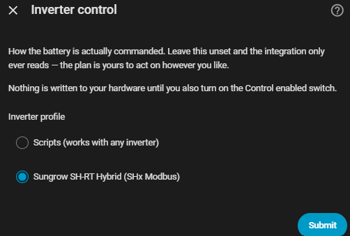

Inverter control¶
How the battery's numbers (capacity, SOC limits — Setup) turn into an actual command on your hardware. This step is optional and separate from the Battery step: leave it unset and the integration only ever reads — the plan is yours to act on however you like.
Configure it under Settings → Devices & Services → EMHASS Companion → Configure → Inverter control.

How it works¶
- Pick an inverter profile. A profile maps EMHASS's four battery decisions (charge, discharge, idle, self-consume) onto service calls against entities your own inverter integration already provides. This integration never talks to hardware directly.
- Confirm the entities the profile asks for — a select, a number, a script, whatever that profile's hardware needs.
- Turn on
switch.emhass_control_enabled(ships off). Until you do, the executor still runs every cycle and records what it would have done onsensor.*_battery_action— see Handing over control for that migration path and the safety behaviours (staleness watchdog, deadband, manual override, handover on shutdown) that apply once it's on.
Leave the profile unset and the battery is never touched, whatever the control switch says.
Profiles available today¶
| Profile | Route | Notes |
|---|---|---|
| Sungrow SH-RT hybrid | mkaiser's Modbus package (HACS) | SH5.0RT–SH10RT, SH15T–SH25T. Needs local Modbus TCP — the cloud-based core Sungrow integration cannot write these registers |
| Scripts (works with any inverter) | any | The universal fallback — see below |
More ship as they get contributed. If yours isn't listed, Scripts is the honest answer today, not a generic profile that doesn't quite match your hardware — see Inverter profile roadmap for what's planned and how to contribute one.
Scripts — the fallback for any inverter¶
Point four script entities of your own at the four battery actions:
| Entity asked for | Called for |
|---|---|
| Self-consumption script | Normal operation, and the safe fallback whenever a plan goes stale |
| Charge script | Force charge |
| Discharge script | Force discharge |
| Idle script | Neither charging nor discharging |
Each script receives power_w (the requested power, in watts), plus soc
and soc_target as percentages, as script variables. Leave a script unset
only if your inverter genuinely has no such mode — the self-consumption
script in particular is worth providing, since the executor calls it
whenever the plan goes stale.
Entities¶
| Entity | |
|---|---|
select.*_mode |
Automatic / Self-consumption / Force charge / Force discharge / Idle. Anything but Automatic suspends the optimiser and holds that mode until changed back |
switch.*_control_enabled |
Master gate on acting at all. Ships off |
sensor.*_battery_action |
What the executor did or would do this cycle, and why — its steps attribute is the literal service calls |
Curtailment¶
Beyond the four battery actions, a profile can declare curtail / uncurtail — driven by the plan's own PV-curtailment column, independent of the battery decision. Not every profile supports it; the Sungrow profile does, via its export-limit switch and number. Whether a given profile supports it is documented in that profile's own notes, shown on the confirmation step when you select it.
That column only exists when EMHASS is asked to optimise curtailment in the
first place — Let EMHASS optimise PV curtailment on the Grid and schedule
step, which the Companion sends with every run as compute_curtailment. With
it off there is no curtailment at all: the plan never asks for any, so nothing
is ever written.
There used to be a second, Companion-side rule here — curtail to zero whenever
the sell price was negative and the battery was full — from when
compute_curtailment could only be set by editing the add-on's configuration.
It was removed once that became a checkbox: EMHASS prices negative export
itself, including deciding not to curtail when exporting beats shedding, and
a fixed threshold running afterwards could only overrule that.
One case would want something like it back. EMHASS's curtailment is
continuous, and the executor turns it into an export cap in watts. A profile
whose curtail_mode is zero_export_switch has no such dial — the write is
on or off — so a plan asking to shed part of the array collapses to shedding
all export. No shipped profile uses that mode today; one that does would need
either a decision rule of its own or a way to tell EMHASS its curtailment is
all-or-nothing.
Some inverters also separately permission charging from the grid at all, on top of the plan asking for it (Growatt's
allow_grid_charge, Deye'sgrid_charge_enabled, and others). The Companion doesn't yet assert that permission automatically — it's on the roadmap; see Inverter profile roadmap. Until then, if your inverter gates grid charging, make sure that gate is left open yourself, or a scheduled grid charge may be silently refused by the hardware.